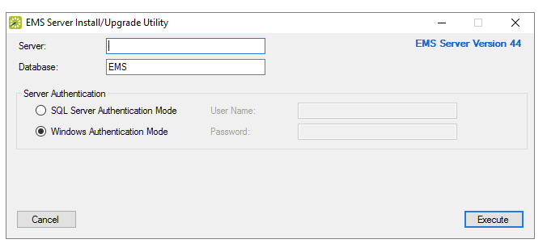
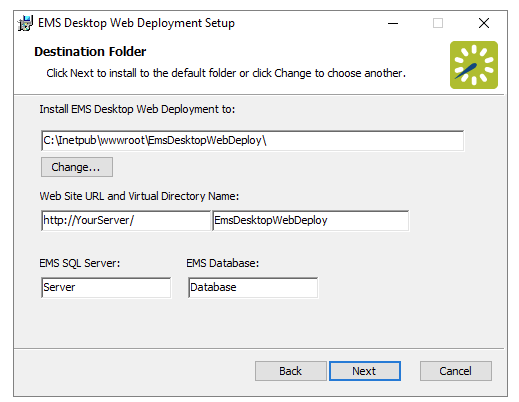

Upgrade Instructions
In order to upgrade EMS, you must perform two operations:
Note: If you are upgrading from a version of EMS released prior to server version 35, please contact Customer Support.
Tip: You can see a summary of all EMS Updates for V44.1 here.
To learn more about our release update process, see Updating to the Latest Version of EMS and How Are EMS Applications Updated.
Upgrading the EMS Server Components
The server upgrade process will upgrade the EMS databases on your MS SQL Server. If you are upgrading from EMS Enterprise 4.x or below, your existing EMSEnterprise_Master database (which contains licensing information) will be replaced by a new EMS_Master database, and your existing EMS database will be upgraded to the current version.
Note: A Microsoft SQL Server SA level account will be required to execute the database upgrade process.
- Download the EMS.ServerInstall.exe file from the EMS Customer Portal.
- Using SQL Server Management Studio, back up your existing EMS databases.
- Run EMS.ServerInstall.exe. (This .exe can be run from any PC that has access to your database server.)

- In the Server field, enter the name of the MS SQL Server.
- In the Database field, enter the name of the EMS database you wish to upgrade.
- In the Server Authentication area, specify your MS SQL Server authentication credentials. If SQL Server Authentication Mode is selected, you will be required to specify a User Name and Password.
- Click the Execute button. A Backup Database popup will appear.
- Click Yes to acknowledge that you have backed up your EMS databases and it is OK to continue. You have completed the upgrade process for the server portion of EMS. Next you will upgrade individual workstations.
Note: For information on installing the optional Email Notification Service or the EMS Campus Auto Sync Service (EMS Campus only), see Installing or Upgrading the EMS Email Notification Service and/or Installing or Upgrading the EMS Campus Auto Sync Service.
Upgrading Individual Workstations
Follow the procedures below to upgrade individual workstations to EMS Desktop Client.
EMS Desktop Client Web Deployment
Notes: Before beginning the installation process, please install or upgrade your EMS databases. To learn more about EMS Desktop Client Web Deployment, See Also:EMS Desktop Client Web Deployment Decision Guide. If you choose not to use this option, skip to the Conventional Desktop Client Installation section.
- Manually uninstall any previous versions of EMS Desktop Client Web Deployment on your web server.
- Verify that the prerequisite software has been installed.
- Download the EMSDesktopWebDeploySetup.msi file onto the web server that will be running EMS Desktop Client Web Deployment.
- Run the EMSDesktopWebDeploySetup.msi as an administrator.
- The first screen welcomes you to the EMS Desktop Client Web Deployment Setup Wizard. Click Next to begin the installation process. The Destination Folder dialog will appear.

- Select the destination folder where you wish to install the EMS EMS Desktop Client Web Deployment. The installation process will create a new physical directory on your web server based on the destination folder path you entered (“EMSDesktopWebDeploy” in the example above.).
- In the Web Site URL and Virtual Directory Name fields, enter your SQL instance name.
- In the EMS Database field, enter your Database Name: the Virtual Directory Name will default to the destination folder specified in Step 6. It is recommended that you keep the default setting. The installation process will create a virtual directory on your web server based on the virtual directory entered (“EMS Desktop Web Deploy” in the example above.)
- If you will be using a Load Balancer with the EMS Desktop Web Deploy application, enter the Name or IP Address of your server in the EMS SQL Server field.
- Click Next.
Note: The EMS Desktop Client Web Deployment should not be installed in the same virtual directory as other EMS web-based products OR under a site running another version of the EMS Desktop Client Web Deployment.
- The Ready to install the EMS Desktop Client Web Deployment window will appear. Click Install.
- The Completed EMS Desktop Client Web Deployment Setup Wizard window will appear. Click Finish.
- After following the steps above, verify your EMS Desktop Client Web Deployment installation by opening a browser and entering the address:
http://[ServerName]/EMSDesktopWebDeploy/ (replace [ServerName] with the name of your web server)
Note: The first time you launch the EMS Desktop Client Web Deployment, it may take a few extra moments for the page to display. If you encounter any issues, please contact Customer Support for assistance.
Installing Additional EMS Services
All optional EMS features, services, and add-ons are listed here. You may need to install or upgrade additional features.
Contact Customer Support
- Option 1 (Recommended): Search the Knowledge Base available in the EMS Support Portal.
- Option 2: Submit a Case directly via the EMS Support Portal.
- Option 3: Email support@emssoftware.com.
- Option 4 (Recommended for critical issues only): Phone (800) 288-4565